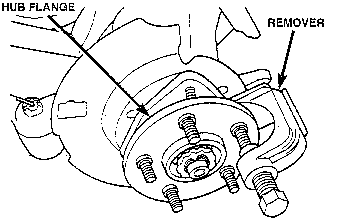

Wheel Stud / Lug Nut: Service and Repair

REMOVAL
1. Raise and support vehicle.
2. Remove wheel and tire assembly.
3. Remove brake caliper and rotor, refer to Brakes and Traction Control.
4. Remove stud from hub with Remover C-4150A, or equivalent.
INSTALLATION
1. Install new stud into hub flange.
2. Install three washer onto stud, then install lug nut with the flat side of the nut against the washers.
3. Tighten lug nut until the stud is pulled into the hub flange. Verify that the stud is properly seated into the flange.
4. Remove lug nut and washers.
5. Install the brake rotor and caliper, refer to Brakes and Traction Control.
6. Install wheel and tire assembly, use new lug nut on stud or studs that were replaced.
7. Remove support and lower vehicle.